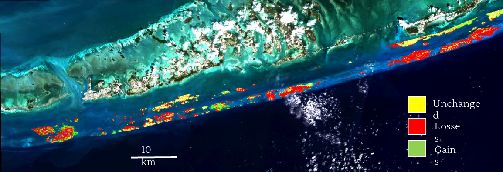

Land Use
2019-06-10
Tourism and recreational use has increased, but resident pop has stabilized: TDC data. ND contact.
Resident population trends. Population & growth rate:
Resident population. “Florida’s population grows by almost 1,000 people each day” “attracts more than 100 million visitors each year” “four-fifths of Florida’s 209-percent population growth since 1970 has been from new residents moving into the state. Much of this in-migration comes from outside the United States – including 30 percent from the Caribbean and Central America, 17 percent from Asia, and 15 percent each from South American and Europe” “over 31,000 migrants from Canada to Florida between 2005 and 2015, Florida saw more in-migration from Canada than Texas and New York combined!” “Only 36 percent of Floridians were native to the state – down from 43 percent in 1950 – with the remaining 43 percent coming to Florida from other states.” – These Population Statistics Will Make You Rethink Your Image of Florida
census.gov/quickfacts/fl
Resident Population Trends
TODO: Could use Demographics Data from ArcGIS to get 2018 and 2023
Tourism Population Trends
Land Cover Changes
Coastal development/ land use change
Land-use has changed.
C-CAP Land Cover Atlas
download: NOAA: C-CAP FTP
Coral Cover Change
Two years of coral cover change in Florida Keys (2017-2019): Effects of Hurricane Irma?
Has the coral cover changed over two years and after the direct impact of Irma in Sept 2017?
study area:

study area
methods:
methods
Classification is confounded by turbid waters. To improve classification, a depth filter was applied.
Results:

- FEB 2017: 77.33 km2
- FEB 2019: 58.85 km2 (13.83 km2 new)
- Total loss:18.48 km2 (23.9%); equals to 5.4 Central Parks NY
- Coral reef cover showed an important decrease, but not attributable to the hurricane only
Conclusions
Benthic mapping can help us to measure and visualize changes in ecosystems Classifications are not perfect, it require clean satellite images (free of clouds, turbidity and sun glint). Some spectral signatures can be confused. In situ data (bathymetry, observations, cover) greatly improve benthic mapping
Development Forecasts
University of Florida GeoPlan Center 2060 Development Projections